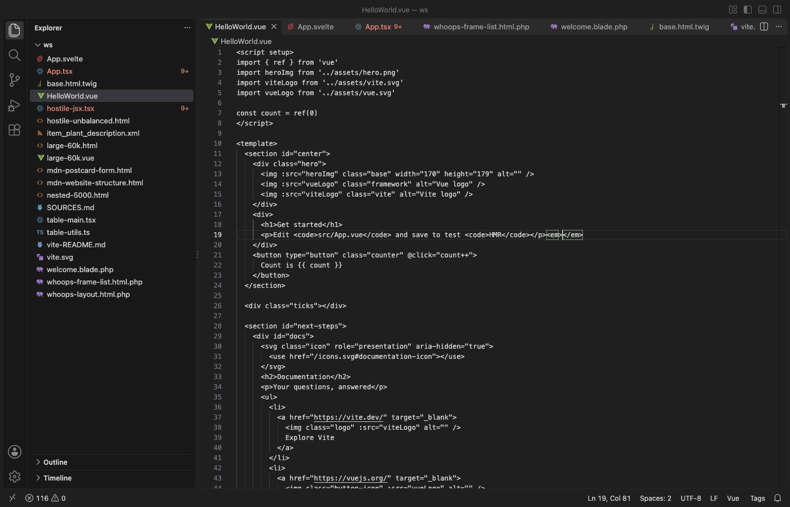

Open files in VS Code and Cursor / Code and APIs
Find unclosed tags in all files
A validator checks one page at a time, and the npm tool unclosed-tag-finder scans HTML files from the command line. In VS Code, Tag Auto Rename & Close Tag Sync renames the matching tag as you type and closes tags for free. Its Pro tool Check Unclosed Tags in All Files lists every open tag with no closing tag, closing tag with no opening tag and JSX pair with two different names in the Problems panel with file and line. It has 3 free tries, then Zovo Pro is USD 19 once.
Free, MIT license. Extension ID zovo.zovo-auto-rename-tag, version 0.2.4. Needs VS Code 1.90.0 or newer.

Steps in VS Code
- Install Tag Auto Rename & Close Tag Sync from the Marketplace, or press Ctrl+P (Cmd+P on macOS) and run
ext install zovo.zovo-auto-rename-tag. - Install the extension. Renaming a tag changes its matching tag as you type, and typing
>adds the closing tag. That is free. - For the file you have open, the matching tag highlight shows which tag pairs with which.
Where Zovo Pro saves time
Rename paired tags as you type, auto close, matching tag highlight and one undo are free in HTML, JSX and TSX, Vue, Svelte, Astro, PHP, Blade, Twig, Jinja, ERB, Handlebars, XML, SVG and Markdown.
It checks every file at once and puts each problem in the Problems panel, where a click opens the line. Save the list as CSV. HTML end tags that the standard lets you leave out (</p>, </li>, </td>) are not reported. The second Pro tool, Rename Tag in All Files, renames a component everywhere, such as <Button> to <UiButton>.
With Check Unclosed Tags in All Files (Zovo Pro)
- Run Check Unclosed Tags in All Files from the Command Palette (Tag Sync) or the status bar menu.
- To check one folder, right-click it in the Explorer.
- Open each problem from the Problems panel, or save the list as CSV.
Check Unclosed Tags in All Files works 3 times on your computer before it asks for a license, and a try counts only when you get a result. Opening a file shows no popup and no countdown.
Zovo Pro costs USD 19 once. It is not a subscription, and it turns on the Pro tools in every Zovo extension, not only Tag Auto Rename & Close Tag Sync. After a card payment (Stripe) your license key shows on the next page. In VS Code, run "Zovo Pro: Enter Zovo Pro license key" from the Command Palette and paste it. The key is checked on your computer, with no network call. With GitHub Sponsors, pick the "$19 one time" tier, then run "Zovo Pro: I already paid: unlock with GitHub Sponsors" and sign in with the same GitHub account. With PayPal, send USD 19 with "Zovo Pro" in the note and the key comes by email within a day.
A team of 5: USD 59 once, by card or by PayPal. Every rule and every Pro tool is on the Zovo Pro page.
Steps in Cursor, Windsurf or VSCodium
- Open the Extensions view with Ctrl+Shift+X (Cmd+Shift+X on macOS).
- Search for
zovo.zovo-auto-rename-tagand click Install. Cursor, Windsurf and VSCodium install from Open VSX, where it is published aszovo/zovo-auto-rename-tag. - If your editor has no gallery, download the .vsix from the Open VSX page and run "Extensions: Install from VSIX...".
- Then use it the same way as in VS Code.
What Tag Auto Rename & Close Tag Sync handles
- HTML, JSX, TSX, Vue and template files.
- JSX pairs with two different names.
- CSV of the list.
What it does not do
- Optional HTML end tags are not reported. If you want those flagged, use unclosed-tag-finder.
Other options
- unclosed-tag-finder (npm). A free command-line tool that flags unclosed tags, including optional ones such as
<p>and<li>. - W3C validator or HTMLHint. Free checks for one page or in CI.
Install counts and Open VSX status were checked on 11 November 2026. Descriptions in quotes are the extensions' own.
Questions
Does it change my files?
No. The check only lists problems.
Is auto rename tag free?
Yes. Renaming and closing tags as you type are free, with no sign-in.
Does it work in Cursor or Windsurf?
Yes. Cursor, Windsurf and VSCodium install extensions from Open VSX. Search for the extension in their Extensions view and install it there.
More about Tag Auto Rename & Close Tag Sync
Read the Tag Auto Rename & Close Tag Sync page for every feature and setting, or the source code on GitHub.
Related guides
- Auto Rename Tag & Close Tag Sync on the VS Code Marketplace (also on Open VSX). Renames the matching HTML, JSX or Vue tag as you type.
- Format XML in VS Code and run XPath on it
- Auto rename HTML tags in VS Code
- Open a SARIF file in VS Code
- Preview a Swagger or OpenAPI file in VS Code
Support this work
If this extension saves you time, you can support the work on GitHub Sponsors. Monthly tiers start at $5, and one-time tiers start at $15. Sponsorship is optional, and the tool works the same without it.
Need your format supported?
Open a format request with a sample file, and I reply there whether it can be done. For USD 299 once, through this GitHub Sponsors tier, I add your file format or a missing feature to this extension, with tests, within 7 days.